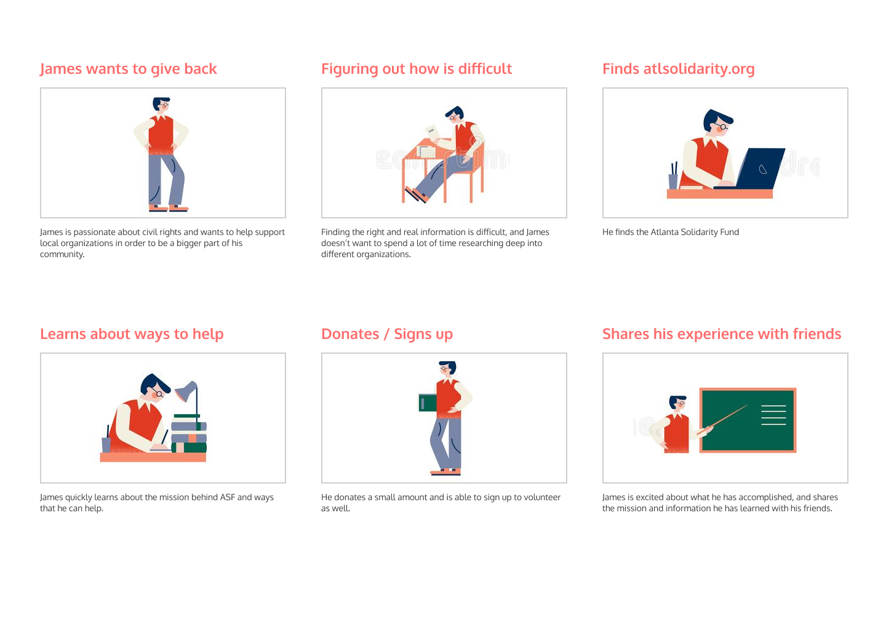

.png)
Atlanta Solidarity Fund
Non Profit Website Redesign Case Study

This case study was constructed to help get a better understanding of the UX/UI design process through a 5 step process: Research, Define, Ideate, Prototype, and Test. With an additional emphasis on UI and High Fidelity Prototyping, I worked in a team throughout the entire case study.
Unfortunately collaboration with my teammates was limited so I had to make do with the insights I gathered aside from outside advice I received.
My Role:
UX Researcher, UX Designer, UI Designer
Research
User Persona

Our design process started by creating this proto-persona based on our assumptions of who our customer might be. We decided to focus on a user who would access the site as a donor, or someone looking to volunteer to help the non-profit organization.
We settled on James who wants to support their community by donating money or volunteering their time, but has a difficult time finding organizations that are transparent about their mission and goals.
Feature Prioritization Matrix

Moving into the features, we did not have to spend much time here. With the main features of donating and receiving financial help being already in place in the current website, we still wanted to go through the process to get an overall idea of how users could perceive the organization and what they offer.
This also helped us stay on track on the main features, and not overcomplicate parts of the website that were not as important.
Definition
User Journey Map

Next we created a User Journey Map to narrow down the process we envision our users going through when visiting the website. Here, we have James finding Atlanta Solidarity Fund’s website through Twitter. He visits the site, learns more about the organization, and then is able to donate and share his experience with his friends.
Storyboard
In our Storyboard, we show the emotions and journey goes through in a more precises and visual representation. The storyboard, along with our previous research, allowed us to better understand the frustrations and feelings of success our user could potetionally go through when using the service.
Having this insight to incorporate into our design and layout proves to be very valuable in the future of our design process.
Ideation
User Flow
.PNG)
Next, we created our user flow. We did not change up much of the flow from the original site since we were unable to receive better information by interviewing someone from the organization.
The final user flow is simple as our research had shown that a big frustration of past and current users was that information was difficult to find, and if that were the case, then the organization can seem untrustworthy or not very transparent.
Prototyping
Wireframing & Low-Fidelity Prototype
.PNG)
Next, we created our user flow. We did not change up much of the flow from the original site since we were unable to receive better information by interviewing someone from the organization.
The final user flow is simple as our research had shown that a big frustration of past and current users was that information was difficult to find, and if that were the case, then the organization can seem untrustworthy or not very transparent.
UI Style Tile

Moving into the Hi-Fidelity prototype, we started by pulling images to build our Style Guide. We compiled everything from typography, logos, and color paletts into a Style Tile to reference when building the Hi-Fidelity prototypes.
A lot of the creative features we settled on were heavily influenced by the current style of the organization. We kept the logo as is, with the primary color staying the same as well. Everything else was built from a feeling of power and boldness to relate to the mission of the Atlanta Solidarity Fund.
Final Prototype